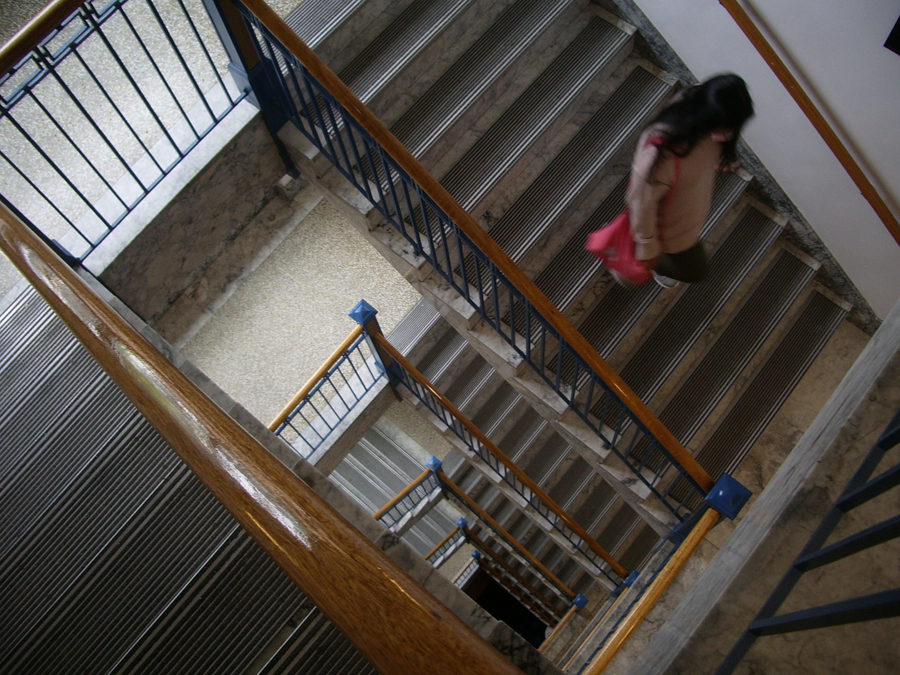
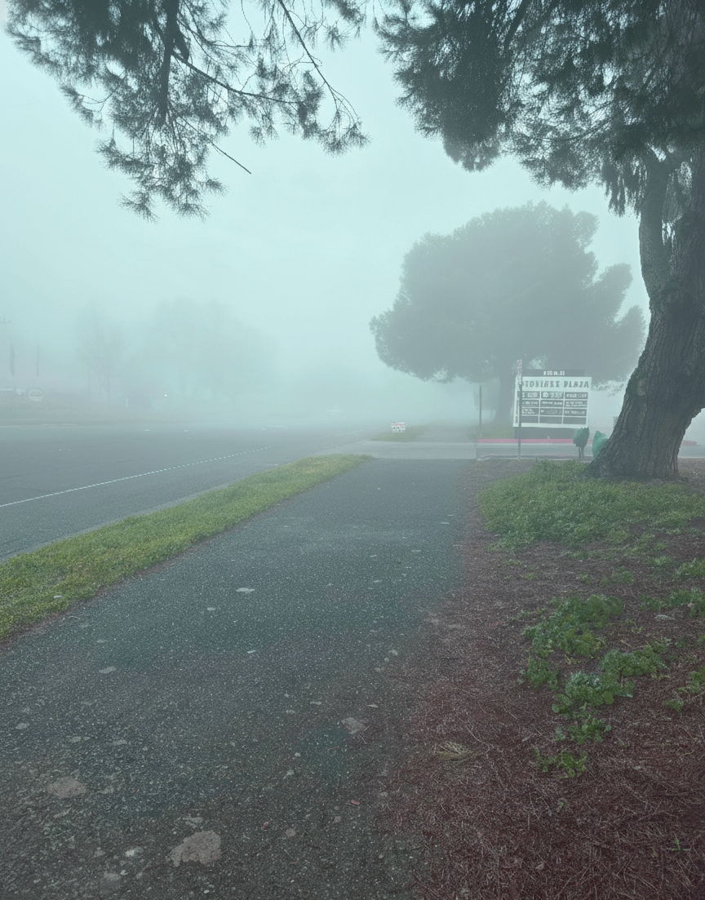
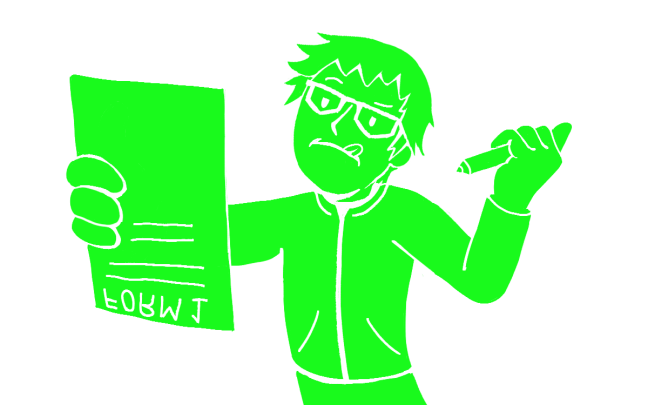

Journal Entry 4: Visual Thinking Analysis
Date: Feburary 11, 2026

Caitlyn Wong 2026
This image appears to be of a stairwell looping downwards captured at a high vantage point. A figure with long hair was also captured descending the stairs. The most interesting part about this image is how it is framed to capture every level going down, providing a lot of depth and visual interest. While the framing does manage to reach all the way to the bottom, very little can actually be made out, which invites an air of uncertainty. The face of the passer by is also obscured from the angle, making it difficult to understand their intentions. All of this adds to Caitlyn’s theme of seeing and showing what is not displayed on the surface.
This is already a really cool looking image, but I think if Caitlyn took the picture from a straight top down angle, I think it would make the composition more mesmerising to look at, as the brain is naturally drawn to repeating patterns.

Chao Li 2026
This image is interesting because it manages to capture a calm, quiet, and slightly unnerving feeling of liminality. This is the exact feeling I am going for, as my topic is on liminal spaces. The thing about liminal spaces is that it is never meant to be scary, however the idea that a place which is supposed to experience activity is suddenly without life inherently creates a sense of unease. Ever since experiencing the profound isolation of the pandemic lockdowns, I’ve developed a strange fascination towards liminal spaces. Whether it be the emptiness of the once bustling streets during the COVID era, or the stillness of a school’s hallways in the evening, places like these always gave me an indescribable feeling.
From a different point of view, it’s almost as if the observer is the only person to remain in a world devoid of all other human activity. Coupling this idea with such images have given me many bouts of existential dread in the past, which further increases my interest in them. There are a few images within my collection that I’m not very satisfied with, as it does not align with the overall atmosphere I am going for. I am either going to tweak them in photoshop or take new photos in more appropriate locations to maximize the feeling of liminality that I am going for.
Journal Entry 3: Visual Thinking Strategies Research
Date: Feburary 7, 2026

Nfinite’s website is one of the more interesting and creative designs I’ve seen in a long time. The layout of the site is very modern and minimalist, but the most intriguing part of it has to be the scrolling transitions. The site has very cool transition animations that play based on the scrolling input of the user. The animation plays only when the wheel is scrolled, and the speed as well as the movement of the animation is determined solely by this factor. Not only does this interactivity make the whole experience more engaging, but it also allows the user to comprehend the visuals at their own pace. I think interesting visuals like these aid in the intake of information, as users would be much more likely to remember something like this rather than a conventional visual aid like a corporate infographic.
Journal Entry 2: Overlays Design Pattern Research
Date: January 28, 2026
Overlays are a fantastic design pattern that is versatile in its applications. It enables the developer and designer to provide additional details and extra breathing room in an otherwise rigid and already established space that may not allow further deviations. However, like any well meaning pattern, in the wrong hands, it can also become a frustrating nuisance to deal with and ultimately become a huge annoyance for the user to have to deal with. The most important thing for overlays is to be a helpful guide and not a road block that stops the user’s momentum. They should only appear through the user’s actions and should be easily closeable. In the end, no matter how useful an overlay is, if it is difficult to close then it becomes a nuisance. It should also follow common sense designs regarding proper user experience, such as having large and readable words and elements, as well as clear labels that allow for seamless navigation. While a polished interface is preferrable, a thoughtfully designed overlay is what truly matters.
Journal Entry 1: Form Design Principles
Date: January 18, 2026

The article introduces many key points involved in the optimization and design of online forms. Much of what was addressed in the article has direct connections to DES 112, which tackled UI and UX in web design. When I read through the article, I can’t help but recall the lessons we had on design patterns and how they all work to reduce the cognitive load of the user. As the name may suggest, cognitive load is the mental burden felt by the user when performing a task. The greater the cognitive load, the less likely the user will be motivated to continue with the task. The article takes note of this and showcases the different do’s and don’ts of form design that impact the overall user experience of the activity itself.
I think chick-fil-a’s website encapsulates good form design. When the customer tries to order online, they are presented with a very simplistic and easy to understand interface. The user is not overwhelmed by a multitude of fields and headings demanding their attention all at once. Instead, they are separated into distinct sections and on different pages and are only able to move on and see other sections when they are done with the current.